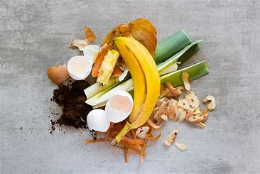
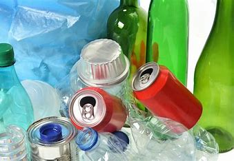
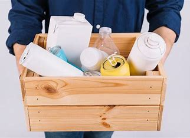
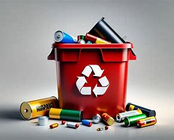

Basura Orgánica
La basura orgánica está compuesta por residuos biodegradables, como restos de comida, frutas, verduras, cáscaras, hojas y otros desechos naturales.
¿Cómo manejarla?
- Separa los residuos orgánicos en un contenedor específico.
- Evita mezclarla con plásticos o materiales no biodegradables.
- Puedes compostarla para crear abono natural para tus plantas.
💡 Datos interesantes:
- El compostaje reduce hasta un 50% la cantidad de basura que llega a los vertederos.
- Los residuos orgánicos mal gestionados generan gases de efecto invernadero.

Inorgánica Reciclable
Los residuos inorgánicos reciclables incluyen materiales como vidrio, cartón, papel, latas y plásticos limpios.
¿Cómo manejarla?
- Lava los envases antes de reciclarlos para evitar malos olores.
- Separa por tipo de material (vidrio, plástico, metal, etc.).
- Lleva los materiales a un centro de reciclaje o utiliza los contenedores adecuados.
💡 Datos interesantes:
- Reciclar una tonelada de papel salva 17 árboles.
- El vidrio es 100% reciclable y puede reutilizarse infinitamente.

Inorgánica No Reciclable
Estos son residuos que no se pueden reutilizar ni reciclar, como pañales, papel higiénico usado, colillas de cigarro y ciertos plásticos.
¿Cómo manejarla?
- Colócalos en un contenedor específico para basura no reciclable.
- Evita mezclarlos con materiales reciclables.
- Reduce su uso optando por alternativas reutilizables.
💡 Datos interesantes:
- Los pañales desechables tardan hasta 500 años en descomponerse.
- Las colillas de cigarro son uno de los residuos más contaminantes en los océanos.

Residuos Peligrosos
Los residuos peligrosos incluyen medicamentos, pilas, electrónicos, aceites y productos de limpieza. Nunca deben tirarse a la basura común.
¿Cómo manejarla?
- Lleva las pilas y electrónicos a puntos de recolección especializados.
- Entrega los medicamentos caducados en farmacias con programas de reciclaje.
- No viertas aceites usados en el desagüe; llévalos a centros de acopio.
💡 Datos interesantes:
- Una sola pila alcalina puede contaminar hasta 167,000 litros de agua.
- Los residuos electrónicos contienen metales pesados como plomo y mercurio, altamente tóxicos.
 alt="Residuos peligrosos">